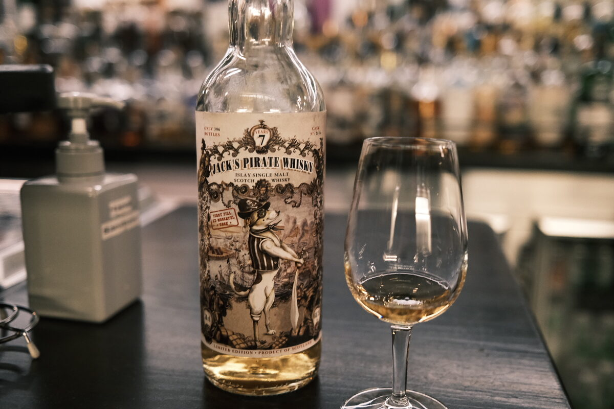

Secret ("Pirate") Islay 2011 Jack Wiebers 7 years 60.3% (first fill moscatel)
Haha, there’s a dog with a pirate sword on the label.
Colour Light gold.
Nose Savoury: mushrooms, soy sauce. Sweet: miso glaze. Peat. Smoke. Raisins and sultanas, fresh grape acidity. Back to the savoury: instant noodles. Volatile, alcoholic. With water: chicken salt.
Palate Sweet and spicy. Quite sharp, some dried fruits and candy sweetness. Brine and earth. Vegetal peat. With water, a helping of caramel and toffee. Boiled lollies.
Finish Smoky. Woody peat. A bit briny too. Mushrooms and moss… probably Islay peat. Very long and quite warming. Earthy. A drizzle of spiced honey. With water, some tropical fruits.
Comments In my experience, these weird dessert wine casks can be, well, weird. Anyway, sweet and savoury, great complexity. A little hot. 87/100.

Posted by Dominic on 14 Jun 2021